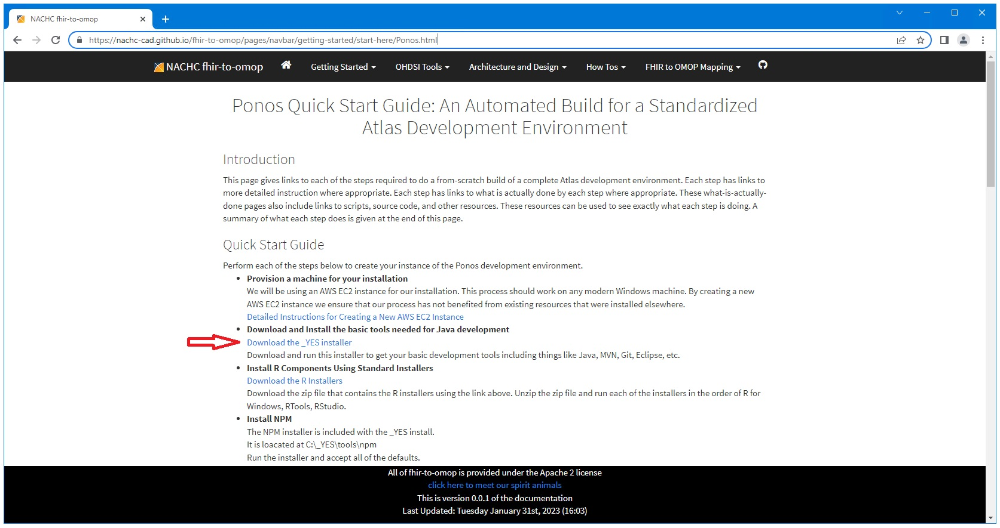
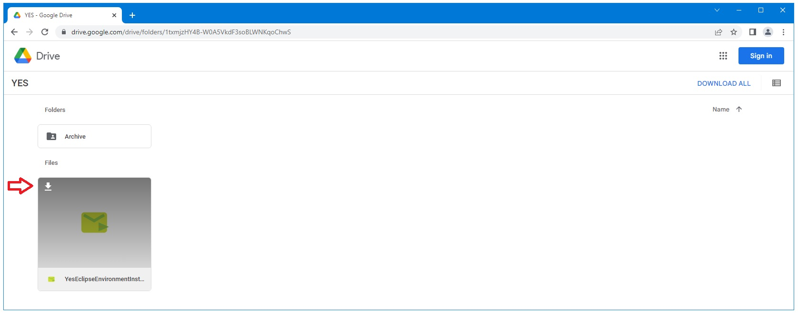
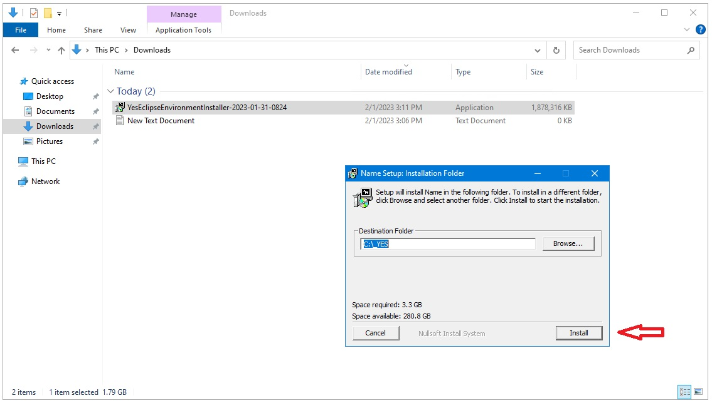
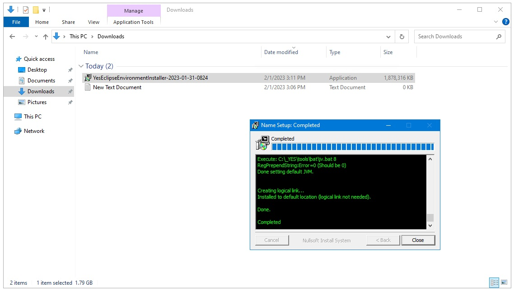
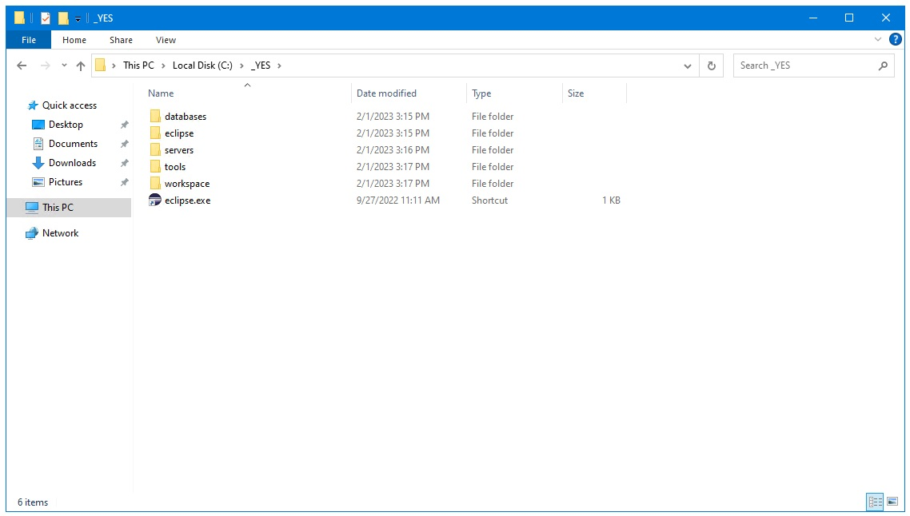

Ponos Quick Start Guide: Download and Install _YES
Download the _YES installer executable
Open a browser and navigate to the link below and click on the "Download the _YES installer" link.
https://nachc-cad.github.io/fhir-to-omop/pages/navbar/getting-started/start-here/Ponos.html

Download the YesEclipseEnvironmentInstaller exe file found there.
It is recommended to accept the default location unless you want to have this installation on a different drive (e.g. D:\ instead of C:\).
If you install on a different drive C:\_YES link will be created for you that points to your customized installation.

Run the executable.

When the installer is finished it should look similar to this.

When your done, you should have a complete development environment at C:\_YES.
